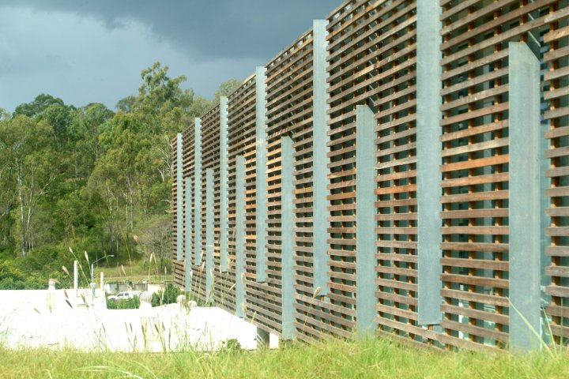
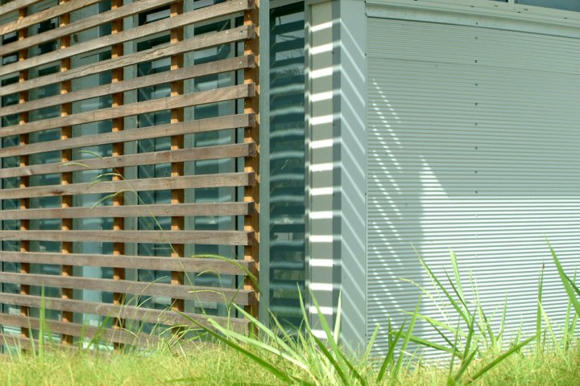
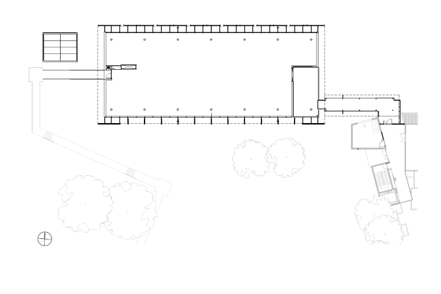
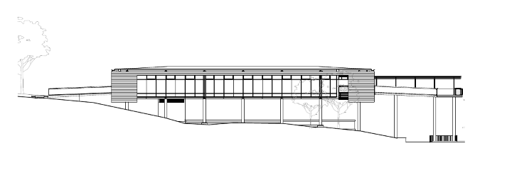
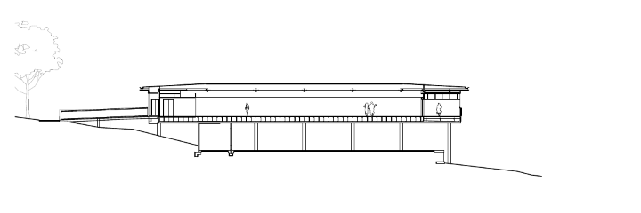
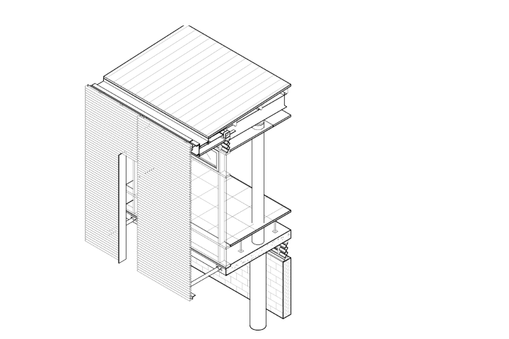
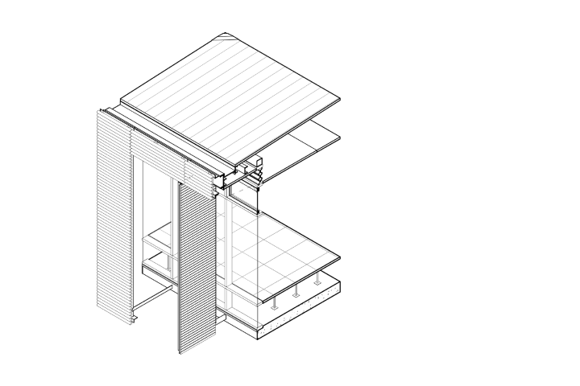
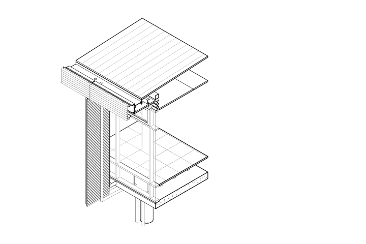
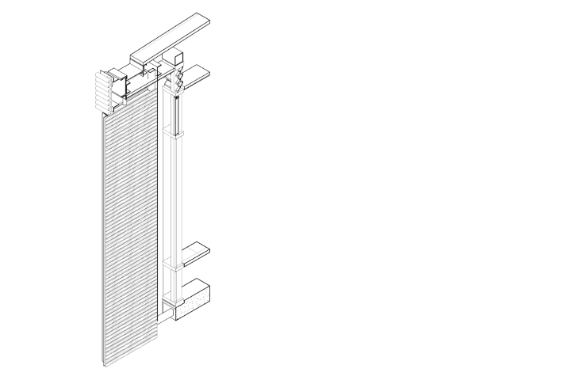

Queensland Centre for Advanced Technology
BHP Billiton Offices and Laboratory
Pullenvale, Australia
Located at the Queensland Centre for Advanced Technology (QCAT) in the Pullenvale suburb of Brisbane, the new facility fulfils previous master planning done for the campus. The site is a meadow with a mature eucalyptus stand and a picturesque wood towards the rear property boundary.
Designed for BHP Billiton researchers, the building was provided as a shell in conjunction with the BHP interior fit out team. In negotiation with BHP it was agreed that the base building shell would include server space as well as three meeting rooms, the remainder of the office fit out would be completed after shell construction. The building was designed to accommodate 15-18 permanent staff members as an open concept environment.


Presented with a modest budget the decision was made to provide a simple efficient building with maximum flexibility for fit-out. Using the metaphor of a 'Queenslander' house, a simple elevated glass box was designed and fitted with appropriate solar control. As the building presented difficult north eastern and south western aspects, the integration of fixed sunscreens became major formal elements. The screens became layers suspended away from the facade line composed of timber battens.








Project Info
- Project Name: CSIRO • Queensland Centre for Advanced Technology | BHP Billiton Offices and Laboratory
- Year Completed: Under 2012
- Location: Pullenvale, Australia
- Firm: Architectus
- Position: Project Architect